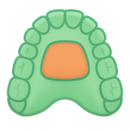

FlexReg: registre dois scans desenhando você mesmo a área estável
O FlexReg registra dois scans intraorais do mesmo paciente feitos em momentos diferentes. Em vez de deixar uma rede adivinhar qual área não se moveu, você a marca por conta própria, com o mouse, na arcada superior ou inferior.
Esta página descreve o módulo legado do Slicer. Para usá-lo por meio de um servidor VISOR: veja Com o VISOR e Usando o VISOR. A versão do VISOR não oferece o contorno à mão livre, a faixa automática da arcada inferior nem a segmentação automática das coroas.
Quando usar
Recorra ao FlexReg quando o AREG_IOS, a versão automática, não conseguir encontrar sozinho uma boa área de registro: uma arcada parcialmente edêntula, um formato de palato incomum, ou simplesmente um caso em que você prefere manter o controle sobre o que conta como referência fixa. O FlexReg é a versão "desenhe você mesmo" do mesmo registro: ambas as ferramentas produzem e leem o mesmo tipo de landmark, de modo que você pode começar em uma e continuar na outra.
Em uma arcada superior, a área é ancorada no palato: escolha quatro dentes de referência e o FlexReg constrói em torno deles um patch em forma de borboleta, ou desenhe o contorno diretamente com o mouse. Em uma arcada inferior, sem palato para servir de placa estável, o FlexReg se apoia na linha mucogengival, posicionada automaticamente, e a engrossa até formar uma faixa ao longo da gengiva.
O que você precisa, o que você obtém
A fornecer
- Dois scans do mesmo paciente, em
.vtkou.stl(o.stlé convertido automaticamente) - Um scan "moving" (o mais recente) e um scan "fixed" (a referência)
- Dentes identificados coroa a coroa: se não estiverem, o FlexReg executa ele mesmo a segmentação, ao custo de uma espera nessa primeira passagem
- Uma placa de vídeo (GPU): necessária para construir o patch
O que sai
- Um scan registrado em
.vtk, salvo ao lado do original - Uma matriz de transformação (
.tfm) reutilizável pelas outras ferramentas do repositório - Uma prévia exibida na cena antes de qualquer gravação
Etapas
- Carregue os dois scans. Indique qual é o moving (o que está sendo alinhado) e qual é a referência fixed.
- Verifique a identificação dos dentes. Se a arcada ainda não tiver um array de segmentação, o FlexReg calcula um por conta própria na primeira vez: espere um tempo extra apenas nessa execução.
- Construa a área estável. Em uma arcada superior, escolha quatro dentes de referência e modele o patch em borboleta com os controles deslizantes (posição, comprimento, largura), ou desenhe seu contorno à mão livre. Em uma arcada inferior, deixe o FlexReg posicionar os landmarks mucogengivais e depois ajuste a altura da faixa em torno deles.
- Prévia. O botão de prévia executa o registro em uma pasta temporária e mostra o resultado na cena sem gravar nada: use-o para julgar se a área escolhida dá um bom alinhamento.
- Execute o registro final quando estiver satisfeito e escolha onde gravar o resultado.
Quanto tempo leva
Construir o patch e executar o registro leva alguns segundos por par de scans em uma GPU, depois que a área está desenhada. A etapa lenta é a segmentação das coroas na primeira passagem sobre uma arcada não identificada: essa espera acontece uma vez por scan e não se repete depois.
Se travar
Construir o patch e executar o registro só funcionam com uma GPU compatível. Sem ela, essas etapas falham de vez: não é um simples ganho de desempenho, é um requisito rígido do módulo. Com o VISOR, a placa é a do servidor, e só a etapa do patch a usa: seu computador não precisa de nenhuma.
O FlexReg alinha apenas a área que você delimitou: nunca a arcada inteira. Se o resultado parecer errado longe dessa área, é o esperado: o restante da malha simplesmente segue o movimento calculado sobre o patch, não é registrado de forma independente.
Na arcada inferior, alguns pontos posicionados automaticamente podem ser nitidamente menos confiáveis que os outros (o erro medido salta de cerca de 1 mm para mais de 4 mm nesses casos). O FlexReg os descarta por padrão e preenche a lacuna por interpolação, de modo que um ponto pode parecer "ausente" embora tenha sido detectado. O VISOR não posiciona esses landmarks.
Parta de arquivos .vtk ou .stl já exportados. O registro em si não lê DICOM.
Desenhar a área estável e executar a segmentação das coroas reescrevem ambos o arquivo de entrada, e não uma cópia. Mantenha sempre um backup dos seus scans originais antes de começar. Com o VISOR, sua entrada nunca é modificada: os resultados são gravados na pasta de saída com um sufixo.
O contorno do patch em borboleta é decidido achatando a arcada em uma projeção. Em uma arcada muito inclinada, essa projeção pode captar pontos que na verdade estão muito distantes em altura, produzindo um patch que extravasa a área pretendida: confira a prévia antes de confirmar.
O que acontece depois
O scan registrado e sua matriz de transformação estão prontos para uso direto no AREG_IOS e nas outras ferramentas do repositório que sobrepõem scans ao longo do tempo. Como em qualquer registro automático, uma rápida conferência visual antes de usá-lo para uma medição continua sendo uma boa prática.
Como citar
Nenhuma publicação descreve o FlexReg: nem a região que você desenha à mão, nem o registro que vem em seguida. As leituras abaixo explicam a abordagem, não o módulo.
Nada descreve o próprio módulo, portanto cite a extensão como software:
SlicerAutomatedDentalTools. DCBIA-OrthoLab. https://github.com/DCBIA-OrthoLab/SlicerAutomatedDentalTools
Acrescente a data de acesso se o estilo da sua revista exigir.
Contexto, não é uma citação da ferramenta
- Hutin et al., ShapeMI 2023: AReg IOS: Automatic Registration on IntraOralScans. A metade publicada da família: uma rede encontra sozinha a região estável do palato, enquanto no FlexReg é você quem a desenha.
- Vasilakos et al., Scientific Reports 2017: Assessment of different techniques for 3D superimposition of serial digital maxillary dental casts on palatal structures. Compara as regiões do palato utilizáveis como referência e a reprodutibilidade de cada uma, útil para decidir onde desenhar.
- Garib et al., Orthod Craniofac Res 2019: Superimposition of maxillary digital models using the palatal rugae: does ageing affect the reliability?. As rugosidades palatinas como landmark e o efeito do crescimento sobre a estabilidade delas, vale a leitura antes de fazer o registro de pacientes em crescimento.
A bibliografia completa da ferramenta, o que foi encontrado, e o que foi procurado sem sucesso, está em suas fontes.
Como funciona de verdade → A entrada do atlas: a construção geométrica do patch, o papel das duas redes auxiliares, o ICP que realiza o registro e as armadilhas encontradas no código.